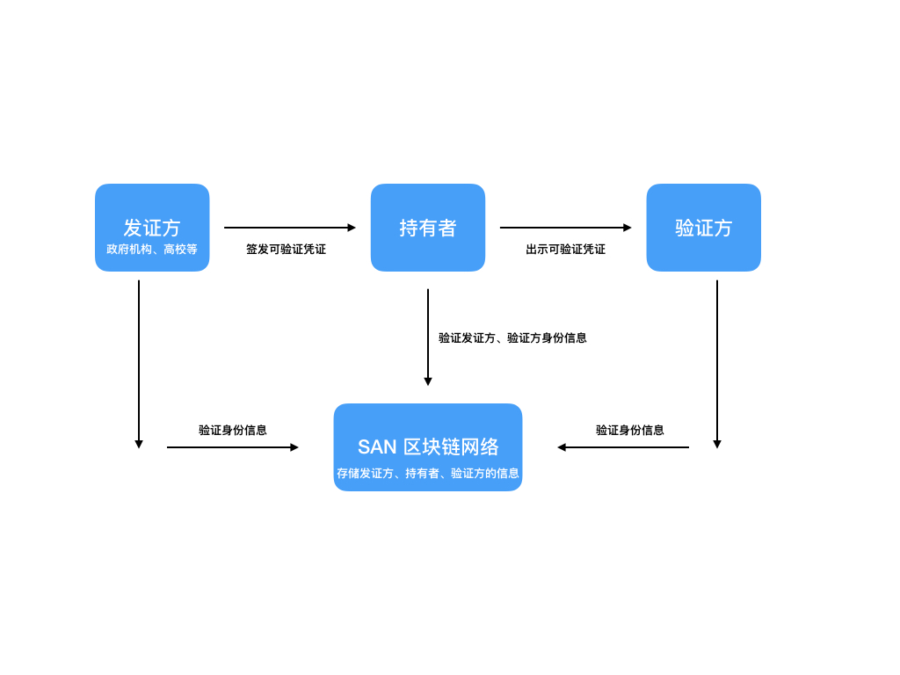
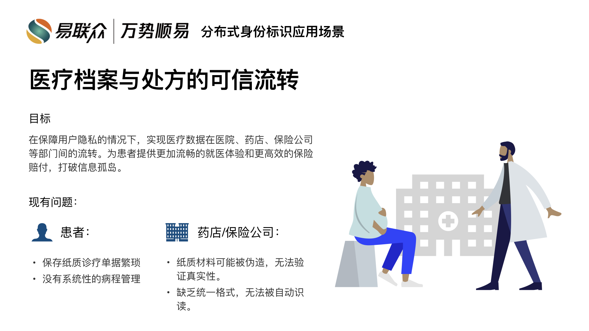
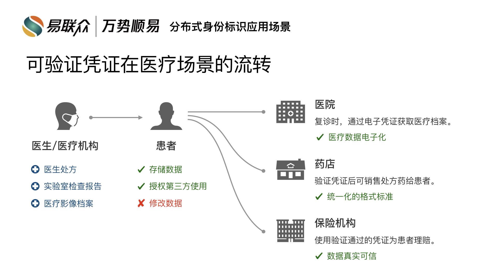
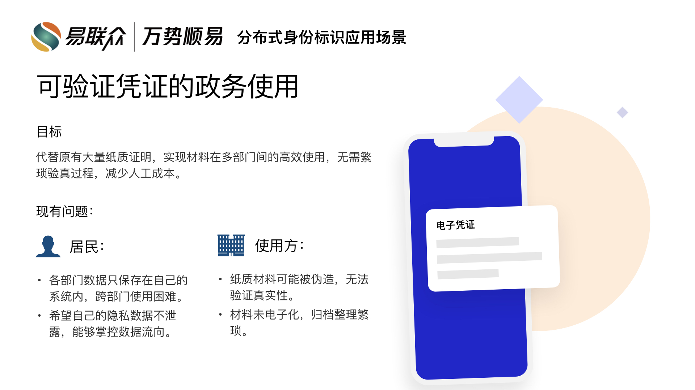
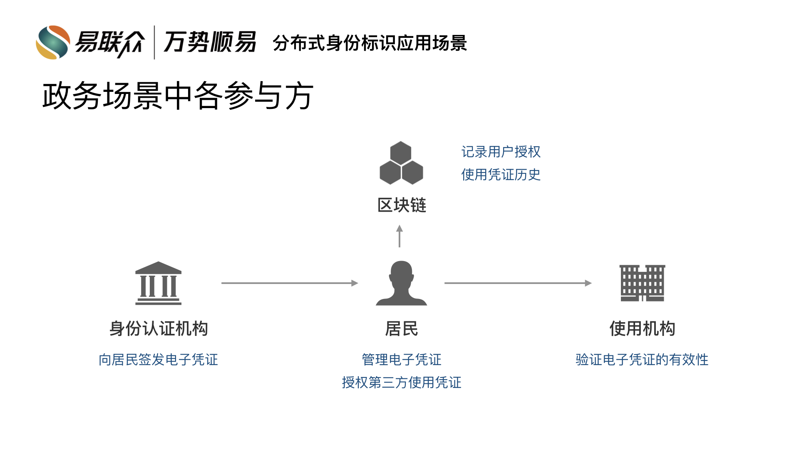
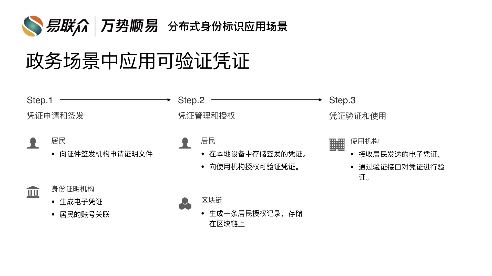

概述¶
证书是我们日常生活当中的一部分，驾驶证用于确保我们拥有驾驶机动车辆的能力，学位证书用于证明我们的受教育程度，出入境管理处颁发的护照让我们可以出国旅行。 在现实世界当中,这些证书方便了我们的生活，但是在互联网世界中，使用场景却寥寥无几。与此同时，在当前互联网环境下，我们也很难甄别由第三方机构核实的教育经历、医保数据、财务明细等个人电子信息是否真实有效。
正是因为有了这样的需求，我们开发了 SAN DID 以及可验证凭证(Verifiable Credentials)。
SAN DID(decentralized identity)
SAN DID 是易联众万势顺易基于 W3C DID 标准 开发的去中心化 ID，部署于易联众 SAN 区块链网络，公私钥体系基于国密 SM2 开发，签名验证体系基于国密 SM3 开发。格式示例: did:san:111111111111
可验证凭证概览
- 2.1 可验证凭证
可验证凭证由以下内容组成:
2.1.1 可验证的内容，比如一张照片、姓名、识别码。
2.1.2 签发凭证的机构，比如政府机关、国家机构、鉴定中心。
2.1.3 凭证类型，比如护照、驾驶证、医保卡。
2.1.4 凭证签发时附加的证明，比如签发机构的电子签名。
2.1.5 其他信息，比如过期时间、使用条款等。
- 2.2 持有者
申请或者拥有可验证凭证的角色，比如学生、雇员、顾客。
- 2.3 发证方
签发可验证凭证的角色，比如政府机构、高校、非盈利机构、贸易组织或者个体。
- 2.4 验证方
接收可验证凭证，并对其真实性进行验证的角色。比如雇主、安检人员、网站。
- 2.5 SAN 区块链网络
基于易联众 SAN 区块链网络，我们将 DID 与区块链账户一对一绑定，同时在该网络中开发了用于管理 DID 数据、发证方的公钥信息、凭证吊销查询接口等信息的智能合约。
可验证凭证流程图
规范文档
使用场景¶
- 医疗档案与处方的可信流转
- 
- 可验证凭证在医疗场景的流转
- 
- 可验证凭证的政务使用
- 
- 政务场景中各参与方
- 
- 政务场景中应用可验证凭证
- 